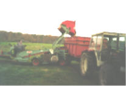

La Ferme de La Godinière
27410
Le Noyer en Ouche
dernière mise à jour de cette page : 23.09.2009
Notre ancienne adresse web :cidre.rene.lesur.club.fr est
devenue obsolète et est
transférée sur
http://pagesperso-orange.fr/lagodiniere27/
La Récolte des pommes à cidre
A l'automne, les
pommes sont récoltées en fonction de leur maturité, en commençant par les
précoces vers fin septembre, pour terminer avec les tardives fin novembre, voir
décembre.
Traditionnellement, les pommes à cidre sont ramassées à la main. Quand il y a entre un tiers et la moitié des pommes tombées
au sol, on considère que la maturité est à point, et le ramassage va pouvoir
commencer. D'abord il faut abattre les pommes restant dans les arbres avec une
perche ou gaule qui pourra être munie d'un crochet pour secouer les branches et
ainsi, faire tomber le reste des pommes. Il faudra ensuite s'armer de courage
pour les ramasser au sol à l'aide de seaux que l'on vide dans des sacs. Le choix
des sacs est important, ils pourront être en jute mais ils deviennent rares, on
leur préfèrera des sacs tissés en matière synthétique qui ont l'avantage d'être
légers, assez résistants et surtout laisseront les pommes respirer pour éviter
un développement de moisissures, ils ne sont pas étanches et laissent également
passer l'eau (en automne, normalement, le temps est généralement pluvieux et la récolte se
fait également sous la pluie). Les sacs plastiques étanches et ayant contenu des
matières non compatibles avec les pommes à cidre (engrais) sont à proscrire
impérativement.
Les sacs contiennent une rasière ou un boisseau, le terme
changeant suivant les régions. Cela correspond à une unité de volume qui est de
50 litres et pèse environ 27 kg soit 37 rasières à la tonne. Les
sacs sont alors chargés dans des remorques pour les emmener au pressoir.
Cette manière de récolter est encore
courante de nos jours. Il va de soi que cela est laborieux et nécessite de la
main d'œuvre "solide".
L'homme à donc inventé des machines, d'abord rudimentaires
pour se faciliter la tâche, pour en arriver à notre époque à des machines
performantes attelées au tracteur ou des ramasseuses automotrices.
Récolte mécanisée
 |
C'est le choix que nous avons fait en optant pour une petite
machine automotrice qui nous permet d'assurer nous - même la récolte avec un
minimum de peine et dans des conditions tout à fait satisfaisantes. Evidemment,
c'est une autre organisation, et la transformation doit suivre de près le
ramassage pour éviter que les fruits ne s'abîment.
Les pommes sont mises directement dans la remorque du
tracteur et sont amenées au pressoir pour être broyées et pressées après avoir
été lavées pour éliminer les particules de terre ainsi que les corps étrangers
indésirables qui pourraient s'y trouver : feuilles, branches et éventuellement
cailloux.
|
 |
Récolte manuelle
(page en construction avec des
photos à venir)
Suite : La Fabrication du Cidre à la Ferme de la
Godinière
En Savoir plus sur :
Ecrivez nous pour donner votre impression et votre suggestion,
merci.
Pour nous écrire : cliquez
Ma messagerie est protégée par Avast
Conception et Réalisation : René Lesur